Guía del portal de vendedores
Cómo usar el Portal GrandBar en tu día a día: tus clientes, las visitas con el manual, la agenda, las cobranzas y el resto de las herramientas, pantalla por pantalla.
Entrar al portal
Con tu email y tu contraseña de GrandBar, desde el celular o la compu.
- Abrí portalgrandbar.com en el navegador.
- En Email, escribí tu email de GrandBar.
- Escribí tu contraseña. El ojo del costado la muestra, para que veas si está bien escrita.
- Tocá Ingresar. Entrás directo a tu Inicio.
Escribí tu email y tocá ¿Olvidaste tu contraseña?. Se abre WhatsApp con soporte, con el pedido ya escrito, y te la restablecen.
Tenerlo a mano como una app
Android (Chrome). Con el portal abierto, tocá los tres puntos de arriba a la derecha y después Agregar a la pantalla principal.
iPhone (Safari). Con el portal abierto, tocá Compartir (el cuadrado con la flecha) y después Agregar a inicio.
El navegador guarda una sola sesión del portal. Si en otra pestaña alguien entra con otra cuenta, arriba aparece un aviso para actualizar. Para tener dos cuentas abiertas a la vez, usá otro perfil de Chrome o una ventana de incógnito.

El menú, los avisos y la ayuda
Todas las pantallas del portal están en el menú, que es el mismo en todas.
En el celular, el menú se abre con el botón de las tres rayas, arriba a la izquierda, y se cierra tocando afuera. En la compu está siempre a la izquierda.
- Clientes y visitas
- Clientes (sección 4) y, desde Herramientas de venta, la App de Vendedores, donde hacés las visitas (secciones 6 a 8).
- Organizar el día
- Agenda, Agenda Eficiente, Planificador de ruta IA y Tareas.
- Lo demás
- Leads, Cobranzas, Torneo Doña Paula, Herramientas de venta y Reportes.
- Pedidos
- Todavía no está disponible: al tocarlo aparece un aviso que lo dice.
La campanita
Está arriba a la derecha. El número rojo cuenta los avisos nuevos y se actualiza solo cada minuto. Tocá un aviso para ir a la pantalla que corresponde. Te avisa, por ejemplo, cuando te invitan a una reunión, cuando te asignan un lead, cuando tu supervisor aprueba tu Agenda Eficiente o te pide cambios, y cuando revisan una activación del torneo.
Soporte
Abajo del menú está el recuadro Soporte: abre WhatsApp con el equipo de sistemas, con un mensaje que ya dice tu nombre y en qué pantalla estás.
Cerrar sesión
Tocá tu nombre, abajo del menú (o tu avatar, arriba a la derecha, en Inicio y Clientes) y después Cerrar sesión. Hacelo siempre que uses un celular o una compu que no sea tuya.
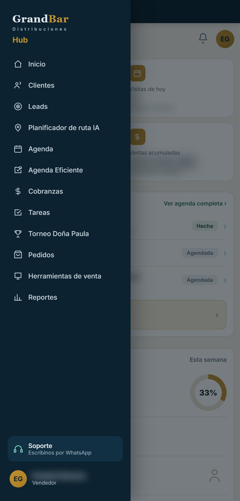
Inicio
Tu día de un vistazo: lo primero que ves al entrar.
Qué hay en la pantalla
- Los cuatro números: clientes asignados, visitas de hoy (con la próxima), tareas pendientes y ventas acumuladas del mes, que se actualizan a diario.
- Tu agenda de hoy: las visitas y compromisos del día, con su estado (Agendada, Hecha, Visitada…). Ver agenda completa abre la Agenda Eficiente (sección 10).
- Iniciar ruta con IA: abre el planificador de ruta (sección 11).
- El resumen semanal: visitas realizadas de las agendadas, ventas acumuladas y clientes nuevos. Ver reporte completo abre el reporte semanal.
Más abajo
- Avisos importantes
- Compromisos atrasados, visitas pendientes de hoy, tareas sin completar, leads sin contactar y clientes con deuda vencida. Cada aviso te lleva a su pantalla.
- Herramientas rápidas
- Catálogo de productos (el de tu canal), Materiales de venta (con el stock disponible) y Curso de vendedores.
- Acciones y promociones activas
- Las acciones vigentes del catálogo de tu canal. Ver todas abre el catálogo.
- Tu mes
- Visitas, ventas, clientes con compra y cobertura: qué parte de tu cartera compró este mes.
Si tenés el curso obligatorio sin terminar, arriba aparece un aviso con los módulos que te faltan y la fecha límite. Tocalo para seguirlo (sección 18).
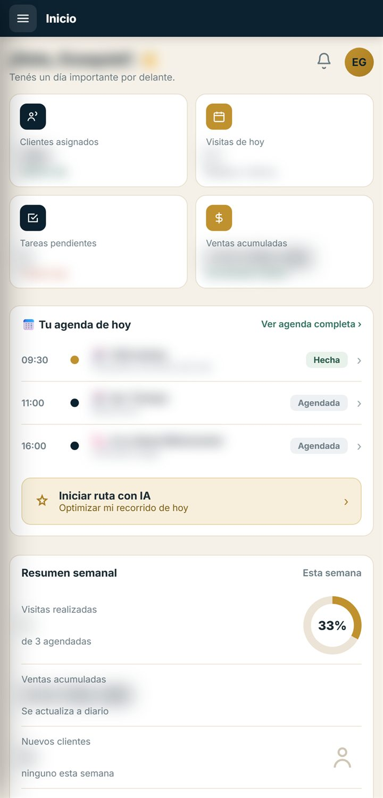
1 2 3 4Clientes
Tu cartera, con la deuda y la última visita de cada cliente.
- Arriba: clientes asignados, visitas de esta semana (desde el lunes) y tus ventas del mes.
- Las pestañas Clientes y Quitados, y los menús para filtrar y ordenar: Todos los clientes (o solo los que tienen deuda vencida, saldo pendiente o están al día), Filtros por rubro y Ordenar (por nombre, más deuda vencida o última visita).
- Cada cliente, con su rubro, dirección y la fecha de la última visita. Tocalo para abrir su ficha (sección 5).
Sacar un cliente de tu lista
Si un cliente ya no corresponde a tu cartera, tocá ✕ Quitar y confirmá. Deja de aparecer en tu lista. Para volver a sumarlo, entrá a la pestaña Quitados y tocá ↺ Volver a la cartera.
En la compu, el buscador está arriba: busca por nombre, dirección, rubro o código. En el celular no se ve: usá los filtros, o el buscador de la App de Vendedores (sección 6).
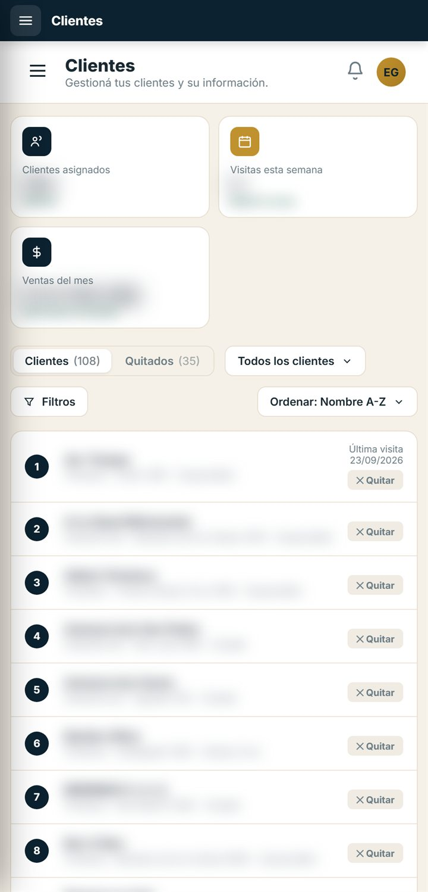
1 2 3La ficha del cliente
Todo lo de un cliente en un solo lugar. En el celular se abre como ventana y se cierra con la ✕.
- Llamar llama al cliente y Cómo llegar abre Google Maps con su dirección. Si falta el teléfono o la dirección, la ficha te lo dice.
- Las pestañas. Resumen: tipo de cliente, teléfono, código, dirección, saldo actual, deuda vencida, vendido acumulado y última visita. Historial: sus visitas, de la más nueva a la más vieja. Notas: escribí lo que quieras recordar y tocá ＋ Agregar nota.
- Los datos comerciales salen del sistema de la empresa. Si un cliente no tiene cuenta corriente, la ficha lo aclara.
- Agregar visita abre tu Agenda con un compromiso nuevo, del tipo Visita y con el cliente ya escrito: completá la fecha y guardalo (sección 9).
Agregar visita agenda la visita, no la empieza. La visita se hace en la App de Vendedores (secciones 6 a 8).
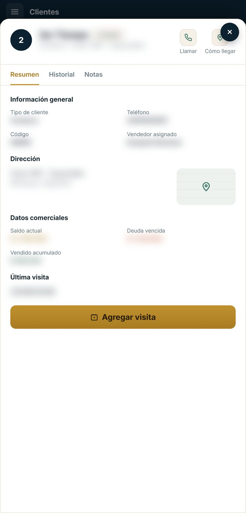
1 2 3 4La App de Vendedores
El manual de vendedores con tu cartera: ahí hacés las visitas.
- En el menú, tocá Herramientas de venta y después App de Vendedores.
- Entrás directo con tu cuenta del portal. Si te pide el código de vendedor, escribilo (por ejemplo, 027) y tocá Ingresar.
- Buscá el cliente por nombre o código, o filtrá por rubro, y tocalo para empezar la visita (sección 7).
- Tu perfil, con tu avatar. Mi avatar y accesorios abre el vestidor.
- El buscador y los filtros por rubro.
- Cada cliente, con su código, dirección, rubro y el porcentaje y la fecha de la última visita (o Sin visitas).
La ruta de hoy
Si entrás desde ▶ Iniciar visitas de la Agenda Eficiente (sección 10), arriba aparece la tarjeta Ruta de hoy con tus visitas del día en orden y cuántas hiciste. Tocá ▶ Iniciar en el siguiente cliente.
Salir, arriba a la derecha, cierra solo la App de Vendedores: seguís con la sesión del portal abierta. Acá también podés quitar un cliente de tu lista, pero para devolverlo a la cartera usá la pestaña Quitados de Clientes (sección 4).
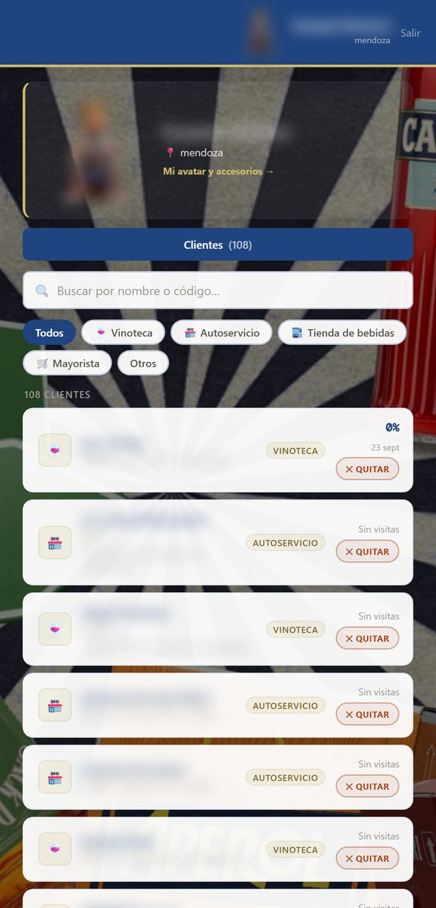
1 2 3La visita
Recorrés el manual del rubro del cliente, sección por sección, y vas cargando lo que acordás.
- La ficha del cliente: nombre, código, rubro y dirección. Tocá el logo para subir uno, o + Agregar WhatsApp si falta su número. Debajo están las visitas anteriores y los puntos del Torneo Doña Paula.
- En restaurantes, bares, vinotecas y tiendas de bebidas, la carta o el catálogo del cliente: sacale fotos para tenerla siempre a mano y analizarla.
- INICIO VISITA arranca el cronómetro de la visita. Si no lo tocás, la visita se guarda igual, pero sin duración.
- Tu recorrido de hoy: cada círculo es una sección del manual. Tocalo para abrirla.
Dentro de cada sección
- Los planes activos de esa sección, con Ver plan completo.
- Las acciones y ofertas vigentes para ese cliente. Con Agregar a visita o + Agregar al carrito las sumás al carrito de acuerdos.
- Programar: registra una acción para más adelante, con la fecha de ejecución. Aparece en la Introducción de la próxima visita, en Acciones programadas.
- Al final, Observaciones de esta sección.
En la Introducción ves el resumen de la visita anterior: acuerdos, materiales pedidos, acciones programadas, observaciones y el próximo seguimiento.
Una sección queda completa (con ✓) cuando la trabajaste: agregaste algo o escribiste una observación. Arriba ves el progreso general.
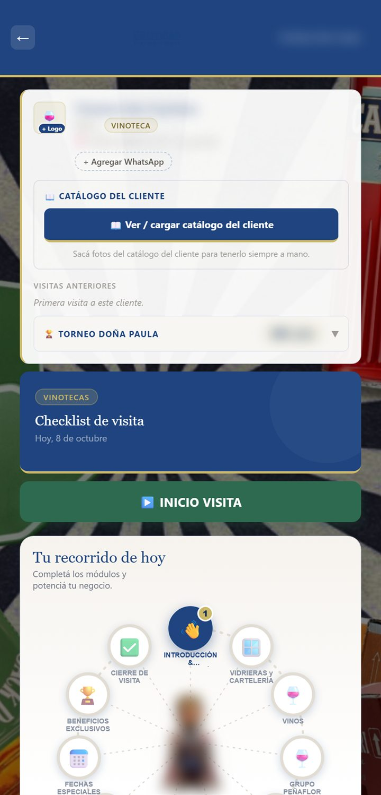
1 2 3 4Cerrar y guardar la visita
La visita se termina con Guardar visita, al final de la pantalla.
El carrito de acuerdos
Lo que vas sumando aparece en la barra N acuerdos seleccionados. Tocala para ver el carrito: cada acuerdo con su sección y su estado, y la cantidad en botellas o cajas. Con la ✕ sacás uno. Finalizar visita → te lleva a la sección de cierre (todavía no guarda nada).
El cierre
- En la sección de cierre, revisá los acuerdos y completá la Próxima acción y la Fecha de seguimiento. Si te acompañó alguien, marcalo.
- Abajo de todo, escribí las Observaciones generales de la visita si querés.
- Tocá Guardar visita. Aparece “✓ Visita guardada”.
- Si hubo acuerdos, próxima acción o materiales, podés descargar el PDF con el resumen o mandarlo por WhatsApp al cliente (hace falta su WhatsApp cargado). Si no, tocá Continuar sin PDF.
La visita guardada queda en el historial del cliente y, si estaba en tu Agenda Eficiente de hoy, se tilda sola con su duración.
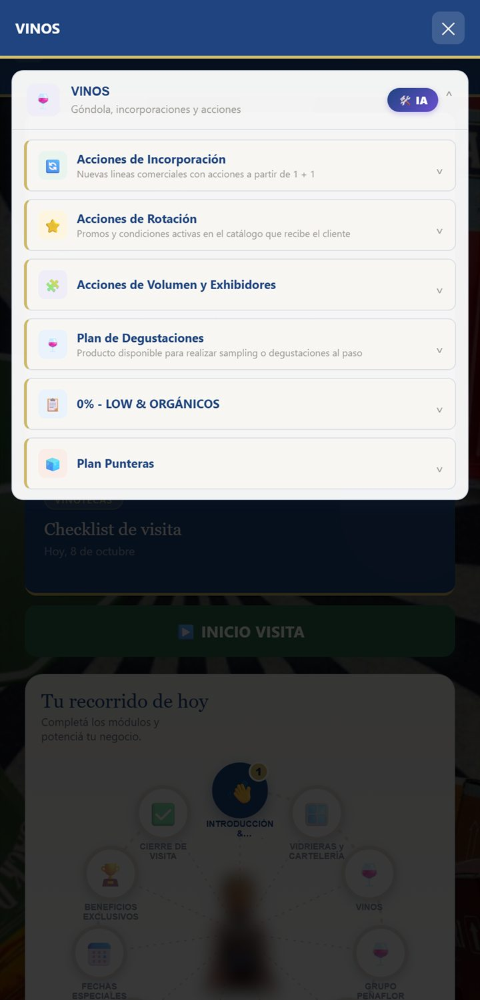
Agenda
Tus visitas y compromisos sueltos, las reuniones con otras personas del portal y sus minutas.
- Reunión para invitar a otras personas del portal y + Nuevo para un compromiso tuyo.
- El aviso para recibir los recordatorios de reunión en este celular: tocá Activar. Te avisa un día antes y una hora antes, aunque tengas la app cerrada.
- La semana: movete con las flechas y Hoy, y tocá un día para ver lo que tiene.
- Cada compromiso, con la hora, el tipo y el objetivo. Tocá el círculo para marcarlo hecho, o el texto para editarlo o borrarlo. Si lo cargó tu supervisor, lo dice.
Cargar un compromiso
- Tocá + Nuevo y elegí el tipo: Visita, Reunión, Llamada o Tarea.
- Completá el cliente o lugar y la fecha. La hora y el objetivo son opcionales.
- Tocá Guardar.
Reuniones con otras personas
- Tocá Reunión. Escribí qué es, el tipo, el lugar, el día y, si querés, la hora.
- En Con quién del Portal, escribí un nombre y elegilo. Si alguien no está en el portal, usá Otra persona. Si no sumás a nadie, es un evento personal.
- Tocá Agendar. A los invitados les llega el aviso y confirman si van o no.
Si te invitan a vos, tocá Confirmar asistencia o No puedo asistir (te pide el motivo, que le llega a quien la organizó).
Minutas
En cada reunión está Hacer minuta: cargá los temas que se hablaron, los pendientes y los acuerdos, y tocá ✔ Finalizar y guardar. Con Grabar o Subir audio (hasta 100 MB), la IA transcribe y completa la minuta por vos; revisala antes de guardar. El botón redondo del micrófono, abajo a la derecha, sirve para una minuta que no está en la agenda.
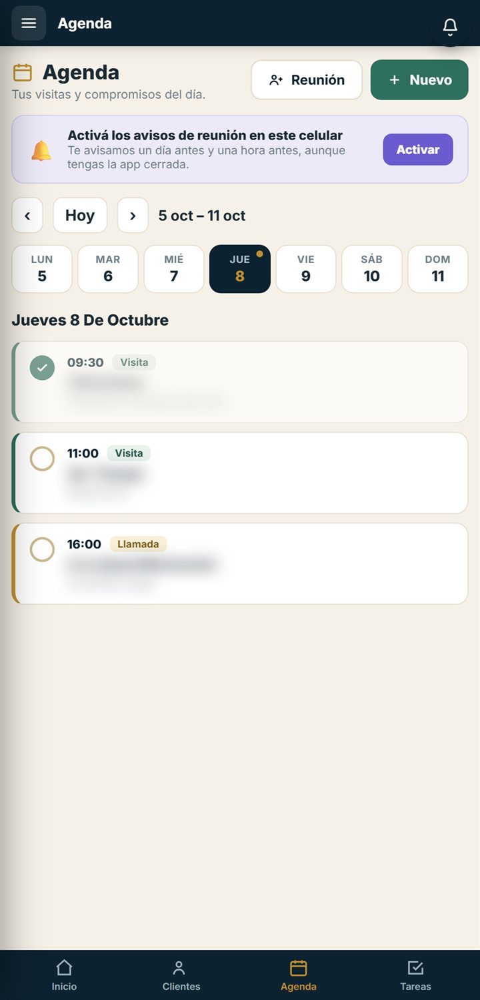
1 2 3 4Agenda Eficiente
Tu plan de visitas del mes: lo armás una vez, se lo mandás a tu supervisor y cada día te dice a quién visitar.
Tiene cuatro pestañas: Hoy, Categorizar, Mensual y Envío.
- Categorizar (una sola vez)
- A cada cliente le ponés su frecuencia de visita: semanal, quincenal o mensual. Queda guardado.
- Mensual
- Ubicás cada cliente una sola vez con Ubicar: elegís el primer día y se repite solo (los semanales cada 7 días, los quincenales a los 15). La barra Clientes ubicados dice cuánto te falta. Tocá un día del calendario para ver o ajustar sus visitas.
- Envío
- Cuando esté lista, tocá Enviar agenda al supervisor. Arriba ves el estado: borrador, enviada, aprobada o con cambios pedidos (con la nota del supervisor). Te avisa en la campanita.
- Hoy
- Tus visitas del día. ▶ Iniciar visitas (manual) abre la App de Vendedores con la ruta de hoy, y cada visita que guardás ahí se tilda sola con su tiempo.
Si no pudiste ir a un cliente
En Hoy, tocá No pude visitar: escribí el motivo y, si querés, pasá la visita a otro día. Le llega a tu supervisor.
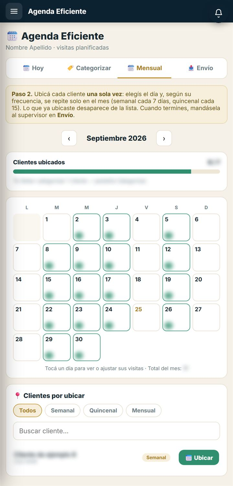
Planificador de ruta
El recorrido del día, ordenado para hacer menos kilómetros.
Se arma solo al entrar. Toma los clientes de tu cartera que tienen la ubicación cargada, elige hasta 12 que estén cerca entre sí y los ordena para recorrer lo menos posible.
- Arriba
- Cuántas visitas tiene la ruta, los kilómetros y la duración estimada (15 minutos por visita, más el viaje).
- Tu recorrido de hoy
- Las paradas en orden, con un horario estimado desde las 8:45, y el mapa con el camino.
- Comparación de rutas
- Cuántos kilómetros serían en el orden de tu cartera y cuántos ordenada por cercanía.
- Iniciar navegación
- Abre Google Maps con todas las paradas en ese orden.
Ordena solo por cercanía: no tiene en cuenta el tránsito, los horarios de los clientes ni tu Agenda Eficiente. Si tus clientes no tienen la ubicación cargada, la pantalla te lo dice y no arma la ruta.
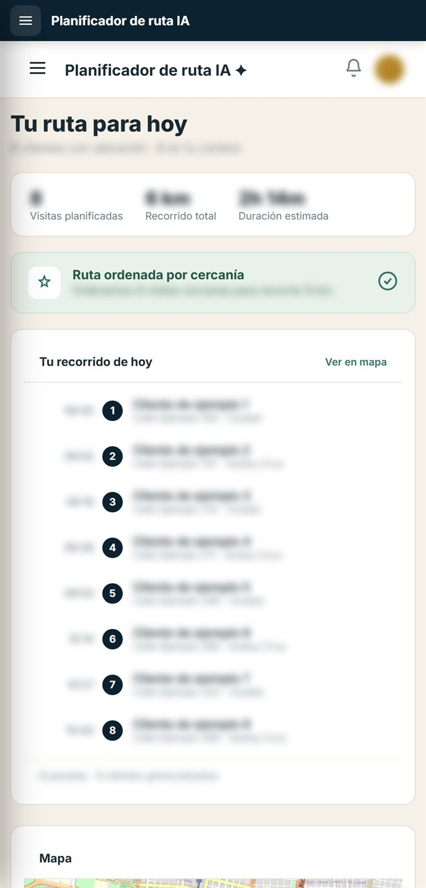
Tareas
Las tareas que te carga tu supervisor.
- Entrá a Tareas. Arriba ves cuántas completaste hoy.
- Cuando cumplas una, tocala para tildarla. Si te equivocaste, tocala de nuevo.
Cada tarea dice si es de Todos los días o Solo hoy. Las de todos los días vuelven a aparecer sin tildar al día siguiente.
Las tareas las carga tu supervisor: si no tenés ninguna, la pantalla dice “No tenés tareas para hoy”.
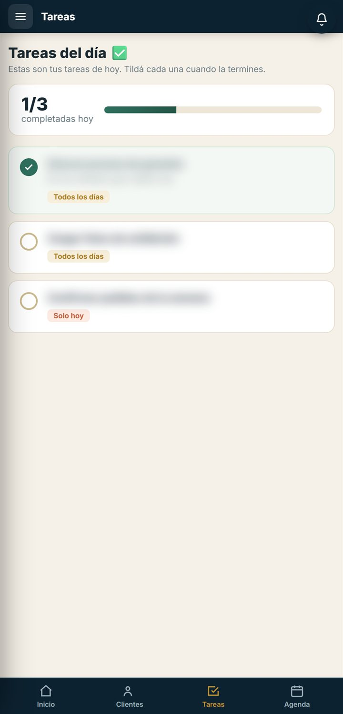
Cobranzas
La deuda de tus clientes y los comprobantes de pago que suben.
- Las pestañas Deuda de mis clientes y Comprobantes.
- Los números de toda tu cartera: clientes con deuda, saldo de tu cartera y vencido.
- El buscador (nombre o código), el orden (más vencidos, más saldo o nombre) y el filtro (solo con deuda, solo con vencido o todos).
- Cada cliente con su saldo y lo vencido. WhatsApp abre un mensaje listo: “Hola! Te escribo de GrandBar por el saldo de tu cuenta… ¿Cómo lo coordinamos?”.
El saldo es lo que debe el cliente menos su saldo a favor. Lo vencido son todas sus facturas vencidas, sin descontar el saldo a favor: ese saldo lo usa el cliente cuando paga. Los números salen del sistema de la empresa; si cobraste hoy, puede tardar en verse.
Comprobantes
- El cliente sube el comprobante de su pago en el Portal del Cliente. Te aparece como A procesar.
- Lo cargás en Conquer y tocás Marcar procesado. Te pide confirmar y pasa a En tesorería.
- Tesorería lo revisa: queda Confirmado ✓ o Rechazado.
Ver abre el comprobante. Si el cliente usó saldo a favor, aparece un aviso en verde: el monto puede no coincidir con las facturas.
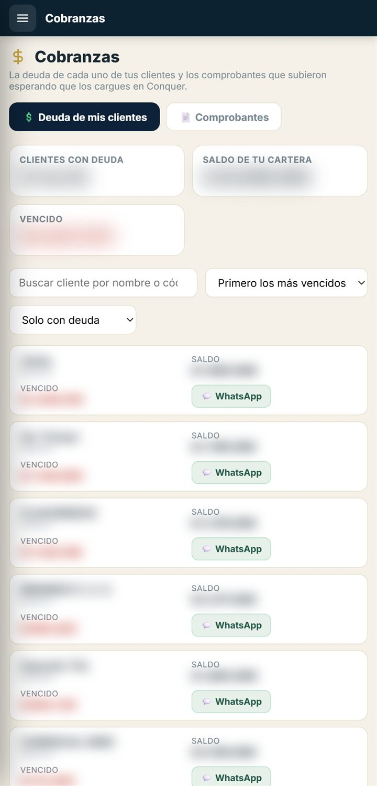
1 2 3 4Leads
Contactos nuevos que te asigna tu supervisor para que los conviertas en clientes.
- Cuando te asignan uno, te llega el aviso a la campanita. Entrá a Leads.
- Filtrá con las pestañas: Todos, Nuevos, Contactados, Convertidos o Descartados.
- Contactá a la persona con WhatsApp, el botón del teléfono o el email.
- Actualizá el estado: Marcar contactado, ✓ Convertido o Descartar.
- Anotá el seguimiento en Nota / seguimiento: se guarda solo cuando salís del campo.
Torneo Doña Paula
Tus puntos, el ranking de cada sucursal y las activaciones que cargás.
- Las pestañas: Mi puntaje, Mis activaciones y los rankings de Mendoza y San Luis (tu fila dice “· vos”).
- Tus puntos totales, tu puesto en tu sucursal y cuántos puntos te faltan para pasar al siguiente.
- Los puntos por categoría: acciones, volumen y activaciones.
- El detalle de cada concepto y producto.
Los puntos oficiales los carga Administración en su planilla; se actualizan cuando la cambian.
Cargar una activación
- En Mis activaciones, tocá + Cargar activación.
- Elegí la línea y la acción, el cliente (escribí el nombre o el código y elegilo de tu cartera) y la fecha de la activación.
- Sumá hasta 2 fotos y, si querés, un video corto (hasta 60 segundos y 50 MB). Hace falta al menos una foto o el video.
- Tocá Enviar activación.
La revisa Juan Pablo Sepúlveda, jefe de Trade Marketing. Queda Para revisar y después Aceptada o Rechazada (con el motivo); te avisa en la campanita. Mientras está para revisar la podés borrar.
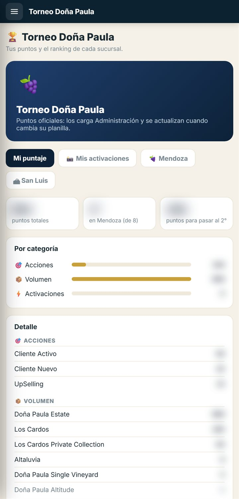
1 2 3 4Herramientas de venta
Lo que necesitás para tus visitas, en un solo lugar.
- App de Vendedores
- El manual de vendedores con tu cartera: ahí hacés las visitas (secciones 6 a 8).
- Posibles nuevos clientes
- La IA busca en el mapa bares, restaurantes o vinotecas (según tu canal) que todavía no son clientes tuyos.
- Catálogo de productos
- Acciones, promos y precios vigentes por marca. Se abre el catálogo de tu canal (catalogoon.com o catalogooff.com) en otra pestaña.
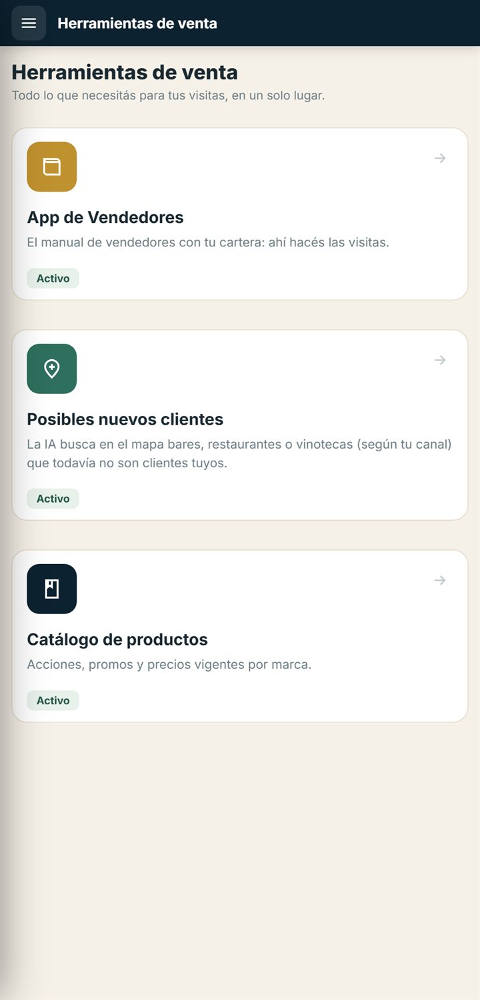
Reportes
Mandale tus reportes a Dirección.
- En Nuevo reporte, poné un título (por ejemplo, “Ventas del día — Mendoza ON”).
- Elegí el tipo (diario, semanal, mensual o puntual) y escribí el período.
- Escribí el reporte: qué se hizo, números, novedades y pendientes. Si tenés un archivo en Drive, pegá el enlace.
- Tocá Enviar a Dirección.
En Enviados ves cada reporte con su estado: Pendiente Aprobado ✓ Pide cambios Rechazado. Si Dirección te dejó una devolución, aparece debajo. Mientras está pendiente lo podés eliminar.
Cuando Dirección revisa un reporte no te llega un aviso: entrá a Reportes para ver la respuesta.
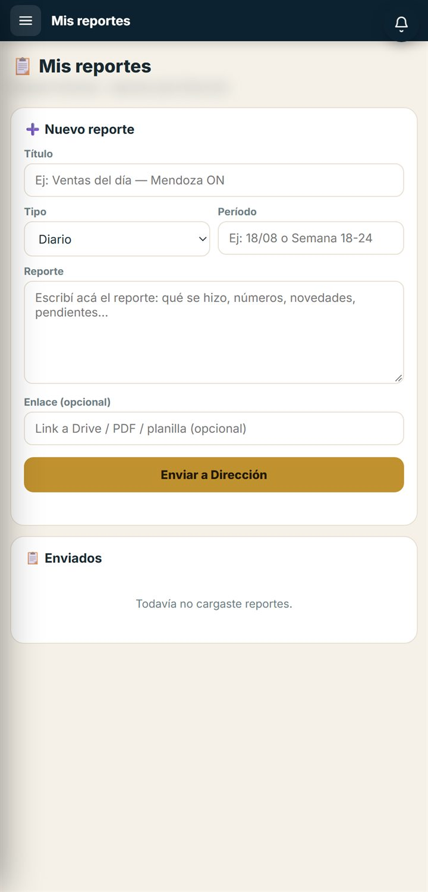
Curso de vendedores
Tu formación en el manual de tu canal, rubro por rubro.
Se entra desde Inicio: el aviso del curso pendiente o Curso de vendedores en Herramientas rápidas. Para volver, tocá la flecha de arriba a la izquierda.
- Cada módulo es un rubro. Abrilo y leé sus lecciones: qué incluye, la explicación y el consejo para la visita. Al terminar cada una, tocá Marcar como leída.
- Con todas las lecciones leídas se habilita el Quiz del módulo. Respondé todas las preguntas y tocá Enviar respuestas.
- Para aprobar necesitás el mínimo que dice arriba (en general, 70 %). Si no llegás, repasá las lecciones y volvé a intentarlo.
Arriba ves cuántos módulos aprobaste y la fecha límite. Cuando aprobás todos aparece tu certificado, que podés imprimir o guardar en PDF.
↑ ÍndiceAyuda y preguntas frecuentes
Si algo no anda o no encontrás algo.
- WhatsApp de soporte
- +54 9 261 245-2651, el equipo de sistemas.
- Recuadro Soporte del menú
- Abre WhatsApp con un mensaje que ya dice tu nombre y en qué pantalla estás.
- Esta guía
- En el menú del portal, Guía del portal.
Para que te ayuden más rápido, contá en qué pantalla estabas, qué tocaste y qué esperabas que pasara. Si podés, mandá una captura.
Preguntas frecuentes
No veo mis clientes ni mis cobranzas.
Tu usuario tiene que tener cargado tu código de vendedor. Si Clientes o Cobranzas te dicen que falta el código, avisale a soporte.
¿“Agregar visita” empieza la visita?
No: la agenda en tu Agenda. La visita se hace en la App de Vendedores, desde Herramientas de venta.
¿Dónde veo lo que programé durante una visita?
En la próxima visita a ese cliente, en la Introducción, en “Acciones programadas”. No aparece en tu Agenda.
¿Cada cuánto se actualizan los saldos y la deuda?
Salen del sistema de la empresa y se actualizan solos. Si un cliente pagó hoy, puede tardar en verse.
Quité un cliente por error. ¿Lo puedo recuperar?
Sí. En Clientes, entrá a la pestaña Quitados, buscá el cliente y tocá Volver a la cartera.
¿Cómo sé si mi supervisor aprobó mi Agenda Eficiente?
Te llega un aviso a la campanita, y en la pestaña Envío ves el estado y la nota si te pidió cambios.
Toqué Pedidos y no pasa nada.
Todavía no está disponible: por eso aparece el aviso.
Me olvidé la contraseña.
En la pantalla de ingreso, escribí tu email y tocá ¿Olvidaste tu contraseña?. Se abre WhatsApp con soporte para restablecerla.
Me apareció un aviso de que cambió la cuenta. ¿Qué pasó?
Alguien entró con otra cuenta en otra pestaña del mismo navegador. Actualizá la pantalla, fijate con qué cuenta quedaste y, si no es la tuya, cerrá sesión y volvé a entrar.
¿Funciona en la compu?
Sí. En la compu el menú queda fijo a la izquierda y las pantallas se ven más anchas.